程序合成
程序合成
顾斌, 于波, 董晓刚, 李晓锋, 钟睿明, 杨孟飞. 程序智能合成技术研究进展. 软件学报.
http://www.jos.org.cn/1000-9825/6200.htm
基于输入输出
特点
- 根据输入输出实例对训练合成模型。输入领域特定语言（DSL）描述的需求规格，合成模型便可以给出与之相对应的程序
- 需求规约为输入输出示例对
代表方法
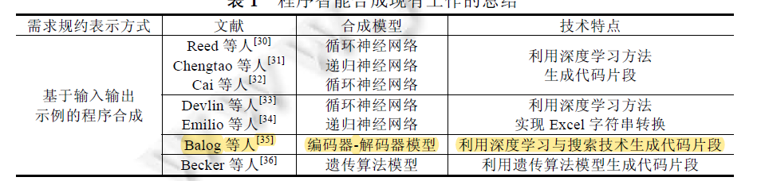
主要进一步阅读了Balog等人的Deepcoder，该方法能够根据输入输出示例,使用深度神经网络和集束搜索技术实现特定领域的代码自动合成。
特色：
- 缩小了搜索空间,用大小为34 的DSL 指令集进行表示,通过将深度神经网络和集束搜索技术相结合生成简单的程序
- 与传统方法相比,该方法实现效率较高。该方法作为一种代码自动合成方法,将深度学习技术和代码的搜索生成技术相结合,具有创新性
局限性：
- 指令集和操作数有限,无法描述复杂任务,通常只能生成10 行左右的代码。
- 只能合成简单的程序，动态规划和搜索都无法做到。所以需要通过添加更多的原语来扩展DSL，并在程序构造中允许更多的灵活性(例如允许循环)
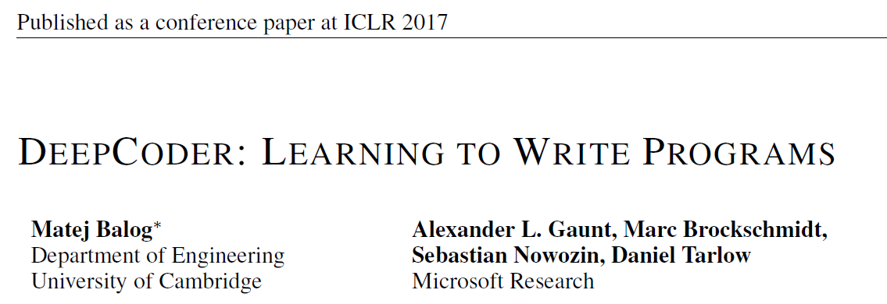
输入输出：
总的输入为示例输入输出对，如下图中的Input-output example
输出为DSL表示的程序
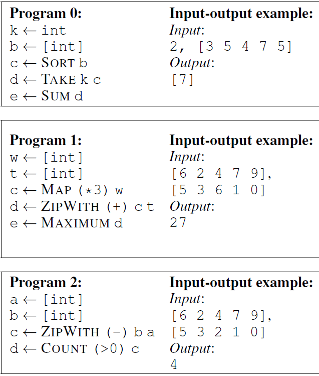
模型结构
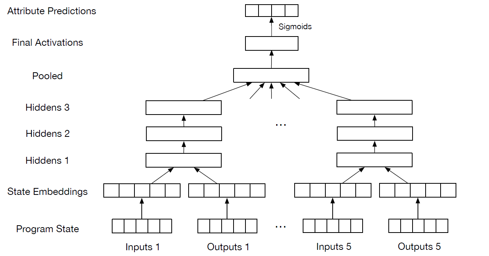
-
用one-hot编码来表示输入输入和输出类型（数或数组），然后用NULL将其填充到最大长度L
-
输入和输出的整数都映射到大小E=20的learned embedding vector中（整数的范围被限制在一个有限的范围内，每个嵌入都被单独参数化）
-
将输入类型、输入、输出类型、输出的embedding连接到一个固定长度的向量中，并将这个向量通过H=3个包含K=256个sigmoid单元的隐藏层传递
-
最后得到源代码中出现DSL定义的函数的可能性，上述程序得到的输出如下图所示
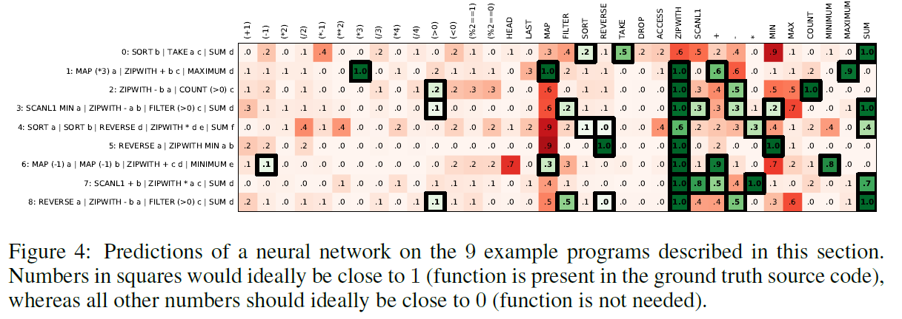
DSL表示的部分函数如下所示：
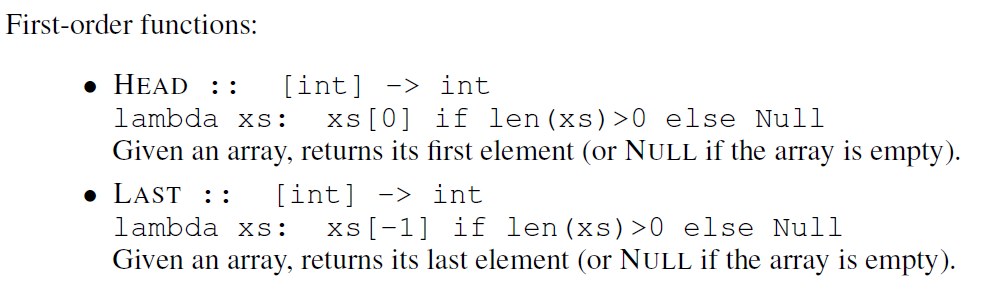
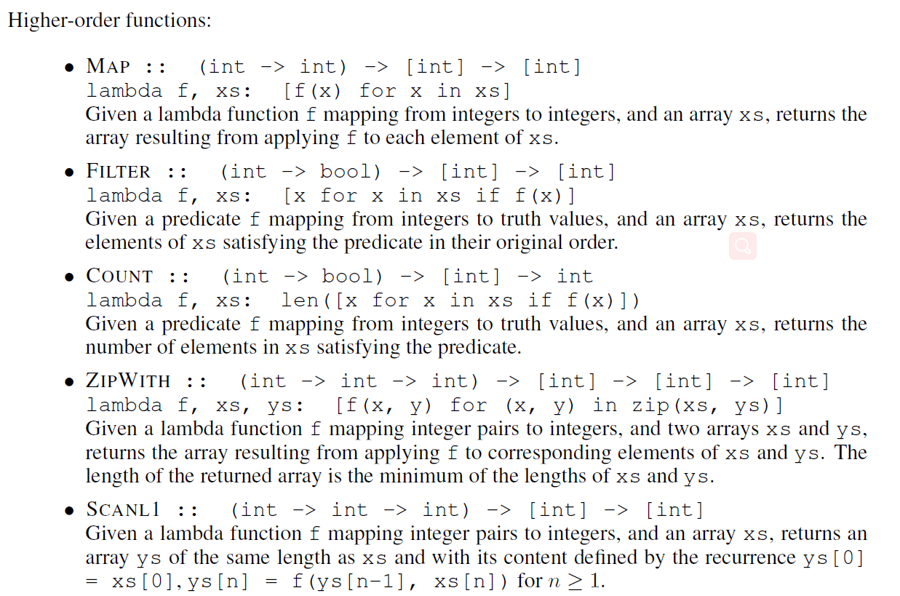
然后，使用神经网络预测到的概率来指导搜索与给定输入输出示例对一致的程序。一般用到的算法有DFS,“Sort and add” enumeration,Sketch,λ^2。
基于代码框架（语法）
特点
主要利用程序结构或者语法框架信息,将程序代码转换为抽象语法树、控制流图和数据流图、程序框架草图等某种结构化表
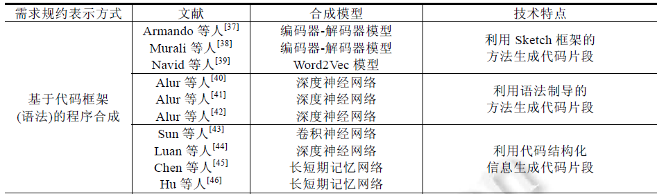
打算进一步阅读Alur等人提出的方法，该方法的输入包括一组由逻辑表达式描述的需求语义规范和一组符合语法规则的候选实现集,允许用户使用语法来补充候选集,并找到一个满足给定需求的解.该团队同时在基于语法制导的程序合成方法基础上加入了多种技术,如增加反例技术、激活学习技术、随机搜索技术等,这些方法利用语法进行程序搜索,大大缩小了代码空间,从而提升了搜索效率。
而更新的有的是生成SQL程序或只能根据上下文自动补全而无法生成可执行程序。
Search-based program Synthesis
Communications of the ACM,2018
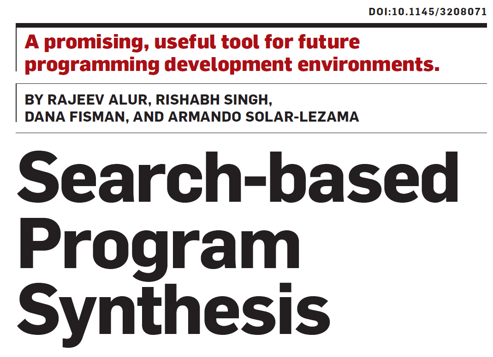
特色：
- 需求规约为逻辑规约，输入输出对
局限性：
-
依赖于逻辑规约的定义
-
仅仅找到一个表达式，相当于只能进行简单的数学、逻辑运算
-
无法生成可执行代码
输入输出：
输入：
- Exp：（expressions specified using a grammar），如下所示
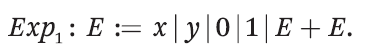
- Spec：所需函数的逻辑规范，如下所示表示x，y中的最大值
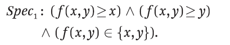
输出：
从Exp找到一个expression e，使得Spec中用e替换f是valid
找不到则报错
模型：
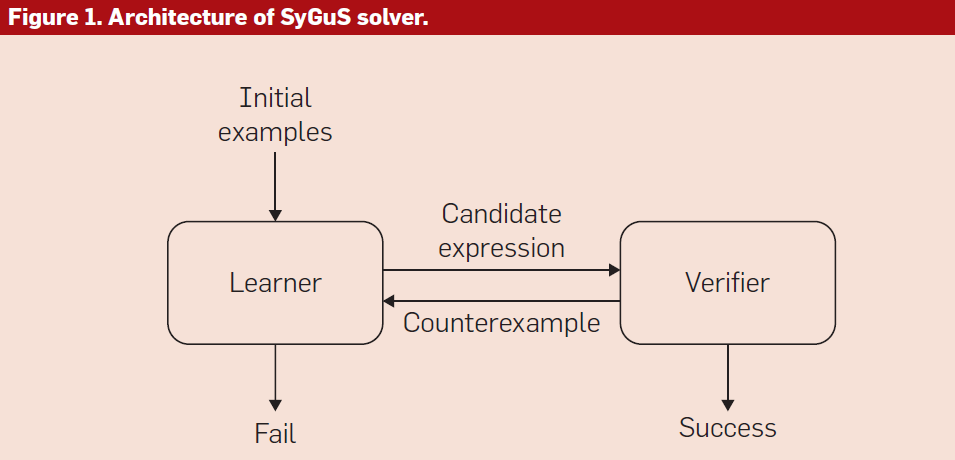
-
初始示例集包含有趣的输入，learner使用这些输入来引导其搜索。这个集合最初可以是空的
-
learning module：寻找候选expression，至少对于初始示例集来说。
- 是inductive synthesis的一个实例
- 枚举搜索（剪枝方法：如果有e1,e2，对示例集中所有输入得到的输出都相同，则认为是等效的。枚举算法只维护一个不相等表达式的列表，当构造一个新表达式时，它首先检查它是否与列表中已经存在的表达式相等，如果相等，则丢弃它）或使用决策树
-
verification oracle（SMT solver）：验证e的合法性。对于所有输入来说，如果都满足则成功找到了e；不满足则反馈给Leaner一个反例
基于自然语言
特点
- 需求规约为自然语言，但自然语言具有二义性
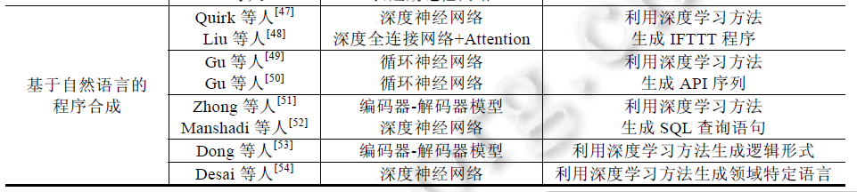
打算先进一步阅读Desai发表的文章。因为考虑到其可以利用神经网络模型学习自然语言与DSL 之间的关系,然后使用训练好的神经网络模型将用户提供的自然语言描述转换为DSL,再通过DSL 进行后续程序合成。或许可以和基于输入输出对的方法结合使用。
代表方法
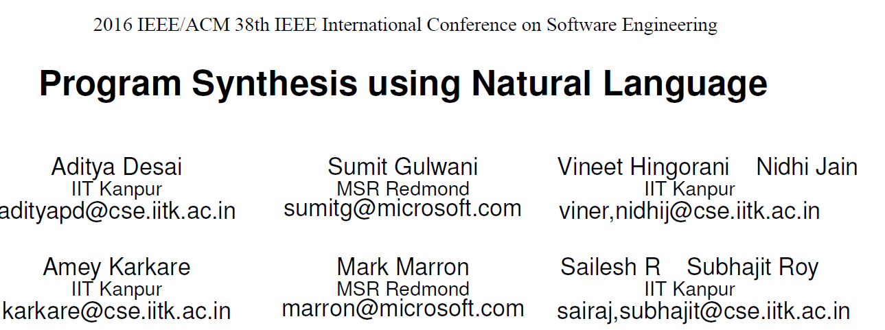
特色：
-
从top-level训练数据生成用于分类器学习的训练数据
-
将离散的评分指标平滑化为连续可微的损失函数，以便有效地学习权值
-
可以应用于新的dsl，并且只需要DSL定义以及翻译对训练数据
局限性：
- 单词与terminals的映射没有考虑单词在句子中的位置
- 上下文隐含义的理解
NL-to-DSL合成器输入输出
用户输入：
- 自然语言（英语句子），如下图中的S
输出：
- 经过排序的候选DSL程序的列表，如下图中的P1，P2
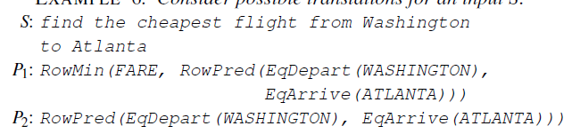
模型
NL-to-DSL合成器的合成方法：
输入：
-
DSL：L=(G,TC)，G为上下文无关语法（Gt表示terminals(函数名或值)，Gr表示生成规则），TC为类型/语义检查器（检查程序是否well-typed）
比如下图所示grammar
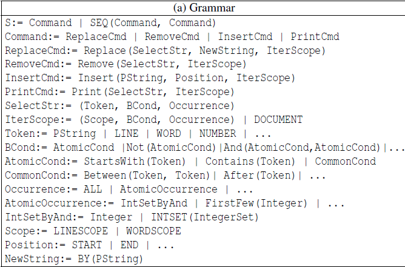
-
训练数据：（S,P）的集合，S为英语句子，P为对应的DSL程序
具体细节论文中没有详细介绍，训练得到NL-to-DSL合成器，以及NLDict
NL-to-DSL合成DSL的算法：
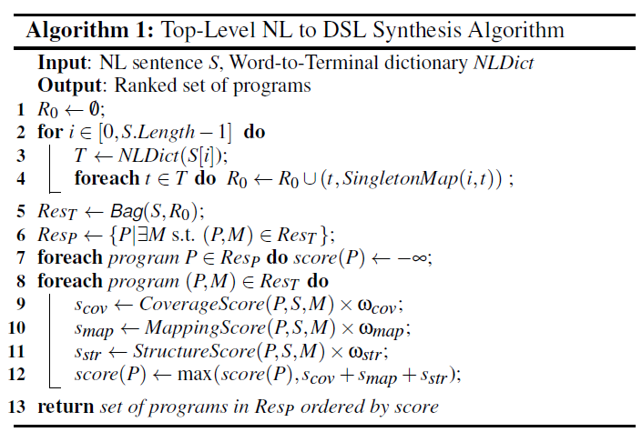
-
将用户输入的句子中的每个单词转换为terminal(函数名或值)得到NLDict字典
如果操作的名称是正确的英语单词，例如Insert，则使用WordNet同义词列表来收集与该操作关联的常用单词。如果名称不是一个简单的单词，而是几个单词的连接(或缩写)，例如StartsWith，则可以通过拆分名称和解析每个子组件单词的同义词来处理。
-
将终端和一个单例映射(将单词的索引与生成的终端相关联)的元组存储到集合R0中
-
通过bag算法：枚举所有可能的well-typed程序来组成程序
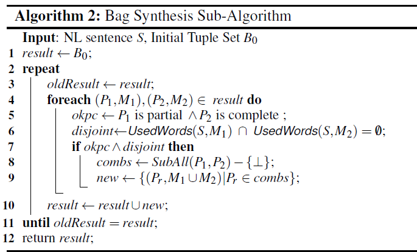
-
其中M为witness map：如果L语言中的程序P与句子S是一致，存在S到Gt中的terminal的映射M，使得M有且仅有P中所有terminals。即S中的单词表示了DSL中的所有terminal
-
UsableWords(S)是在S中出现的那些单词，它们被映射到一些terminals
-
UsedWords(S;M)是在S中出现的可用单词的集合，作为映射M的一部分使用
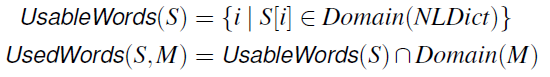
-
-
对可能的程序排序并输出
-
coverage score：输入的自然语言S中实际用于生成程序P的可用信息的比例
-
mapping score：P中的terminals正确解释S中相应单词的可能性
-
structure score：树状程序结构的自然程度，以及程序部分与生成它们的句子部分之间的联系
-
最终得分：梯度下降学习组合权重
-